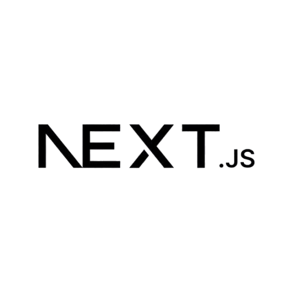
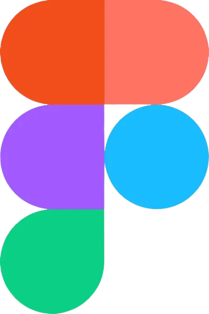
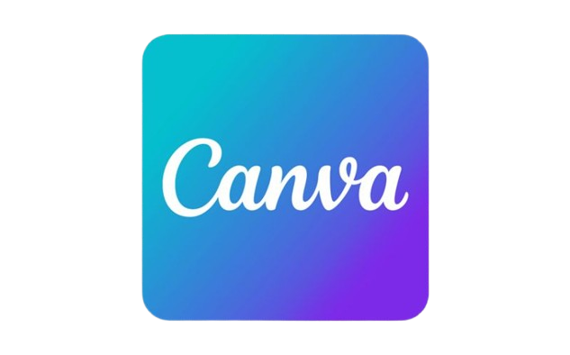
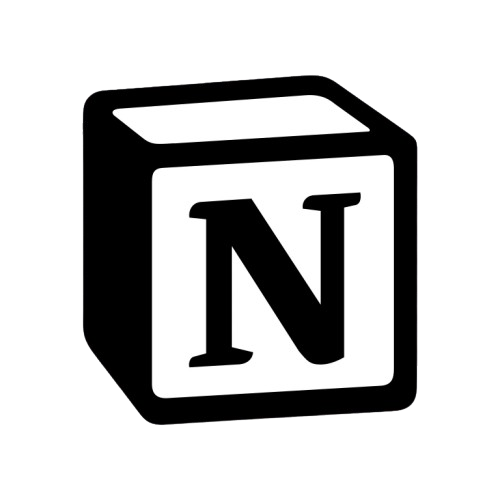
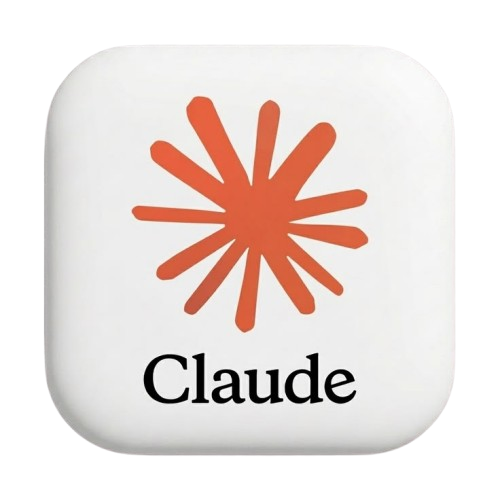
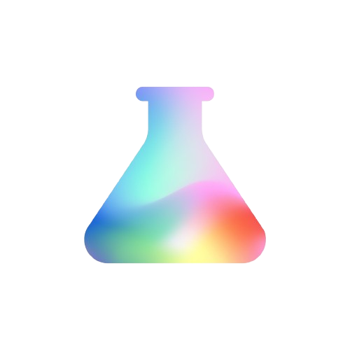

STACK & FERRAMENTAS










Transformo problemas complexos de negócios em experiências digitais claras. Uno a visão estratégica de Product Owner com base técnica em Python e pesquisa orientada a dados.
Liderança de ponta a ponta como Product Owner, alinhando discovery de usuários, priorização de backlog no Jira e direcionamento de uma equipe de 2 desenvolvedores.
Arquitetura modular em Python para controle operacional, catalogação e triagem de itens com ciclo de vida de estados, injeção de CSS personalizado e persistência relacional.
Validação de hipóteses antes do desenvolvimento para evitar retrabalho de engenharia e maximizar a retenção.
Gestão ágil de sprints, escrita de critérios de aceite detalhados e documentação robusta em Notion e Jira para garantir entregas pontuais e consistentes.
Concepção de produto, UX e viabilidade técnica para a expansão do segmento Ultra-High-End, integrando automação cambial preditiva e tokenização de cartões em tempo real.
"Este é um projeto autoral e conceitual de exploração de produto e UX. A marca Revolut foi utilizada exclusivamente como referência de ecossistema e estudo de caso prático para demonstrar estratégias de produto, arquitetura e design, sem vínculo comercial com a empresa."
Contexto de Mercado: Clientes de alta renda e investidores globais enfrentam atrito ao gerenciar múltiplos ativos cambiais em interfaces bancárias convencionais, que sofrem com ruído visual, regras de spread pouco transparentes e lentidão na emissão física.
A Oportunidade: Criar uma camada de produto ultra-exclusiva (Obsidian) com interface minimalista, eliminação de atrito operacional e foco em liquidez instantânea entre fronteiras.
Stakeholders & Escopo: Alinhamento de regras de negócio de câmbio (FX), compliance antifraude internacional e experiência mobile de alta fidelidade.
Frontend / UX: Microinterações táteis em 60fps, transições fluidas (Next.js & Tailwind) e arquitetura de componentes modulares.
Backend & APIs: Integração de microsserviços em Python para conciliação bancária, webhooks assíncronos de transações e roteamento de APIs de cartões.
Entrega Ágil (Jira & Notion): Épicos divididos em: Discovery, Security & Tokenization, Dynamic Limits Engine e VIP Waitlist Funnel. Critérios de aceitação estruturados no formato BDD (Given-When-Then) para testes de carga e resiliência de rede.
Liderança ponta a ponta como Product Owner no projeto RoomMatch, coordenando a capacidade de 2 engenheiros full-stack através de 7 sprints estruturadas no Jira com pontuação em Fibonacci.
Identificação antecipada de sobrecarga na Sprint 7 com acúmulo de ~50 story points (200% da capacidade nominal do time).
Replanejamento dinâmico baseado na Velocity média comprovada nas Sprints 5 e 6, desacoplando o deploy de infraestrutura para uma Sprint 8 de estabilização, prevenindo débito técnico e sobrecarga dos desenvolvedores.
Minha jornada começou num lugar bem analítico: a química computacional. De lá para cá, passei a gerenciar produtos e a escrever código. Essa mistura me dá uma vantagem clara — consigo olhar para um sistema entendendo tanto a lógica de backend (em Python) quanto a experiência de quem vai usar a ponta da tela.
Hoje, atuo como Product Owner liderando o desenvolvimento de plataformas digitais, do discovery até o deploy. Não acredito em fórmulas mágicas de gestão; acredito em escopo bem cortado, critérios de aceite claros, conversas francas com o time técnico e foco no que realmente resolve a dor do usuário.
Priorização estratégica de backlog, roadmap claro e ritos ágeis de alta performance.
Conduzo cerimônias ágeis, defino critérios de aceite e mantenho o roadmap alinhado com as metas de negócio.
Descoberta orientada por comportamento real de usuários e mapas de jornada.
Estruturo entrevistas, testes de usabilidade e protótipos no Figma para validar hipóteses antes de alocar esforço de engenharia.
Base sólida em Python e front-end moderno para decisões técnicas assertivas.
Entendo a arquitetura de sistemas para negociar débitos técnicos e estimar escopos realistas com o time de engenharia.
Acompanhamento de métricas de retenção, engajamento e relatórios de produto.
Tradução de dados brutos de telemetria em insights acionáveis para guiar os próximos ciclos de desenvolvimento.
Compreensão profunda do problema do usuário e dos objetivos de negócio antes de redigir qualquer linha de requisito.
Organização de valor baseada no framework RICE, esforço técnico e alinhamento estratégico com o roadmap.
Acompanhamento diário com o time técnico, desbloqueio de impedimentos e refinamento contínuo de entregas.
Análise de métricas pós-lançamento, coleta de feedback e ajustes rápidos para otimizar a experiência do produto.





